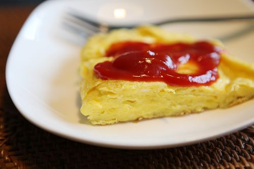

受了龙竞“卤茶叶蛋”的影响 今早做了一份滑蛋 用了朋友送的土鸡蛋
火稍稍大了些 还可以再嫩点儿 爱搭配番茄酱吃

视觉冲击很强烈啊。 不过，这么点我吃不饱……
为什么总是好吃地？
是不是类似日本的卵烧？？？我昨天看了一晚寿司什么的做法，正准备上TAOBAO买工具呢。
卵烧？不懂哎~ 这个不需要什么特别的工具，省时又省力。
日本的卵烧就是鸡蛋搅拌了炒散，很嫩的鸡蛋糊糊，就是我们炒蛋炒得很不熟的那种样子，我不太敢吃，有点太生了。而且他们经常就是整个生鸡蛋放在那里给你拌菜…
我不是日本的追星族，但对鸡蛋拌…有点儿印象。有部日剧里的男女主角，试婚阶段都不会做饭，于是打个生鸡蛋倒点酱油，拌白米饭吃。
问问小原子她们还在不在日本啊，能不能帮忙带点暖宝宝啊：P让人害怕的冬天又要来了，听说还是极寒….（有点冒昧，汗）
苏铁，我没有她们的联系电话哦，你知道日本通讯和我们这里不同的。不好意思哈~
哈哈，谢谢：）不过是突发奇想一下，没想到茶真的回复。 不过上次发现电信的3G机子不用换号换机，漫游很方便哦，推荐一下。
存档只读，评论已关闭。
Name (required)
Email (will not be published) (required)
Website
« 有一种新鲜叫做爱情 | DRESS BLOG »

9 Responses to “还可以再嫩点”
2010-10-13
视觉冲击很强烈啊。
不过，这么点我吃不饱……
2010-10-13
为什么总是好吃地？
2010-10-13
是不是类似日本的卵烧？？？我昨天看了一晚寿司什么的做法，正准备上TAOBAO买工具呢。
2010-10-13
卵烧？不懂哎~
这个不需要什么特别的工具，省时又省力。
2010-10-13
日本的卵烧就是鸡蛋搅拌了炒散，很嫩的鸡蛋糊糊，就是我们炒蛋炒得很不熟的那种样子，我不太敢吃，有点太生了。而且他们经常就是整个生鸡蛋放在那里给你拌菜…
2010-10-13
我不是日本的追星族，但对鸡蛋拌…有点儿印象。有部日剧里的男女主角，试婚阶段都不会做饭，于是打个生鸡蛋倒点酱油，拌白米饭吃。
2010-10-14
问问小原子她们还在不在日本啊，能不能帮忙带点暖宝宝啊：P让人害怕的冬天又要来了，听说还是极寒….（有点冒昧，汗）
2010-10-14
苏铁，我没有她们的联系电话哦，你知道日本通讯和我们这里不同的。不好意思哈~
2010-10-14
哈哈，谢谢：）不过是突发奇想一下，没想到茶真的回复。
不过上次发现电信的3G机子不用换号换机，漫游很方便哦，推荐一下。
Leave A Reply
存档只读，评论已关闭。